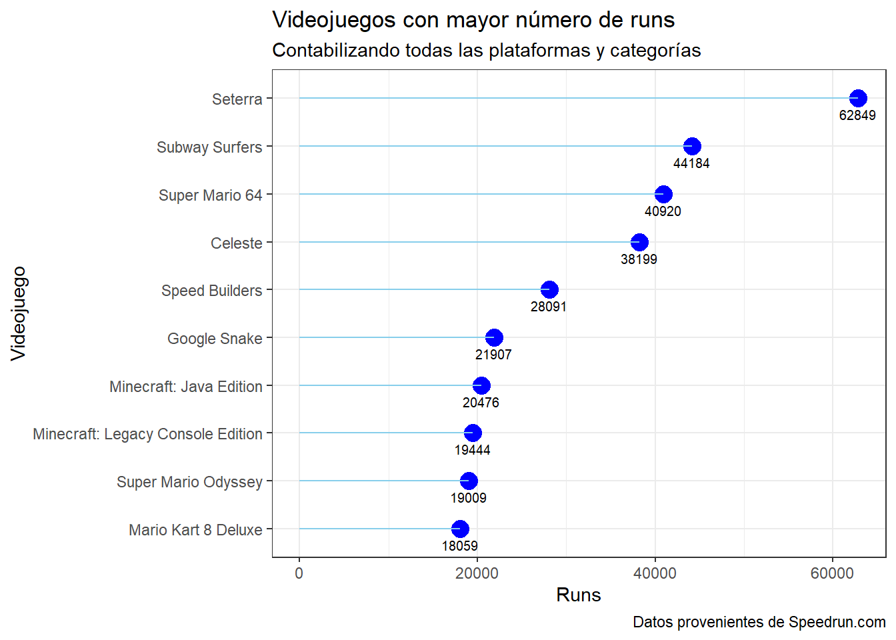
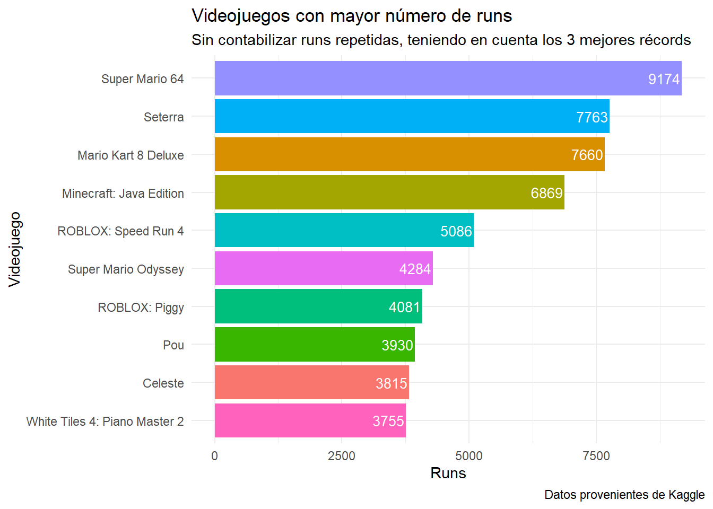
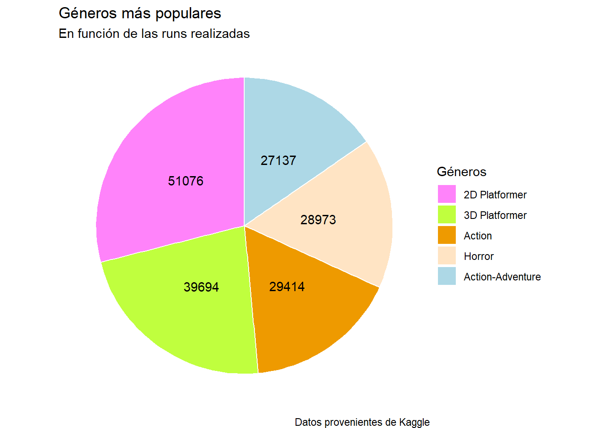
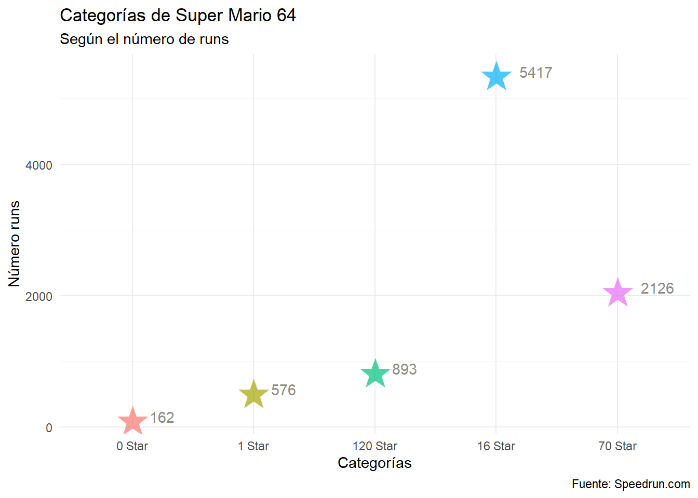
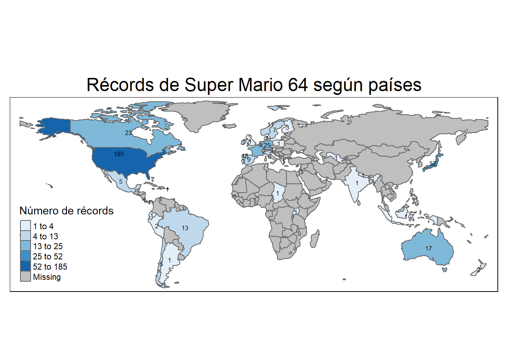

El objetivo del presente trabajo es hacer un recorrido general dentro de la temática de los videojuegos sobre el mundo del speedrunning. Se realizará un breve análisis sobre los videojuegos más habituales con más speedruns, la evolución de los récords y cómo los jugadores ingenian nuevas formas de reducir su tiempo. Además, para poder acotar el análisis, estará centrado en uno de los videojuegos más populares: Super Mario 64, estrenado en el año 1996.
Los datos utilizados han sido extraídos previamente de la página web de Kaggle y de Speedrun.com siendo reordenados y adaptados para realizar el trabajo. Estos datos han sido importados en la memoria de R/RStudio en formato .csv y .xlsx. En el último apartado, se incluyen las referencias utilizadas con sus respectivas URLs.
A grandes rasgos, el speedrunning es cuando un jugador completa un videojuego lo más rápido posible de manera competitiva.
El objetivo es bajar lo máximo el contador de tiempo, y esto se logra a medida que practican, planifican y descubren o innovan nuevas maneras para hacerlo. Esto refiere a que usan a su favor bugs1 o glitches2 que existen en el código o la programación. Puede requerir de una gran habilidad, ya que los videojuegos están diseñados para que se jueguen de la manera que los programadores han determinado, y jugarlo de otra diferente requiere que el jugador “luche” contra el juego.
Los jugadores dedican una gran cantidad de tiempo a perfeccionar sus runs y mejorar su habilidad, ya que existe la faceta competitiva de conseguir un WR (World Record).
Por tanto, una run o speedrun, es el tiempo comprendido que pasa entre que un jugador empieza el juego y termina de la forma más rápida que pueda. Cuando se completa, normalmente se sube un vídeo en un ránking o leaderboard online, donde puede compararse con el resto de tiempos.
Super Mario kachaw
1.1 Tipos de speedruns
Hay diferentes tipos de speedruns. Podríamos dividirlo en 3 grupos:
Single Segment / RTA
Es el tipo más popular de speedrun. El contador de tiempo no para hasta que el juego es completado y no se puede pausar.
Segmented Speedrun
Es menos popular que el RTA. Este tipo de run permite dividir el videojuego en segmentos, que el jugador puede repetir hasta que los complete en el tiempo deseado. Se busca en concreto la optimización a largo plazo de una run completa.
Como es más fácil retransmitir en directo segmentos que juegos completos, tuvo una ganancia de popularidad, aunque recientemente se ha reducido debido a la utilización del TAS.
TAS hace referencia a runs específicamente realizadas con un emulador o software concreto. Tienen la habilidad de ir frame por frame y rejugar cualquier segmento todas las veces que se desee. El resultado es el tiempo teórico más rápido en el que un juego puede jugarse.
Para entenderlo mejor, es como si un ser humano tuviera perfecto tiempo de reacción y suerte. Este tipo de runs también son útiles para descubrir trucos y exploits3 nuevos.
Al ser un tipo de runs muy diferentes, no se comparan con las de Single Segment o Segmented.
1.2 ¿Qué es un frame?
Como sabemos, un vídeo es una secuencia rápida de imágenes o frames. Si hay pocas imágenes por segundo, el movimiento no es tan fluido. Al incrementar el número de imágenes mostradas por segundo, se reduce esa posbilidad.
Un frame en este caso es el periodo de tiempo más corto que pasa en un videojuego. Cada frame el juego realiza cálculos, renderiza una imagen en la pantalla y lee instrucciones de los input controllers: mandos, teclados, ratones, joysticks…
La velocidad a la que un videojuego actualiza qué se está mostrando se mide en FPS (Frames per Second), a lo que se llama “Frame Rate”. Diferentes videojuegos tienen diferentes frame rates.
También, según tu plataforma, por ejemplo si jugaras en PC, el frame rate depende de tu hardware. En muchos videojuegos donde se realizan speedruns, el frame rate está limitado para realizar ciertos trucos, o para que se produzcan tiempos consistentes y justos.
1.3 Categorías
Las speedruns tienen una gran variedad de categorías, incluso a veces, tienen unas diseñadas para juegos concretos. Aunque existe una gran cantidad, las más comunes son las siguientes:
Any%
Hace referencia a que tienes que terminar el videojuego de la manera más rápida posible sin tener en cuenta la progresión de misiones secundarias, coleccionables, enemigos derrotados, etc.
100%
Este tipo de speedruns implica que para terminarlas, tienes que haber completado todo el juego enteramente. Las comunidades de cada juego suelen definir a qué se refieren con “todo”.
Low%
En estas runs, tienes que realizar la menor cantidad de progreso/logros posible y terminar el videojuego. Algunos juegos tienen un porcentaje de finalización definido, como por ejemplo, terminarlo siendo tu personaje el nivel más bajo posible.
IL (Individual Level)
En esta categoría, tienes que terminar un único nivel en un videojuego. Al ser más breve que un juego completo, las runs suelen estar muy optimizadas y ser muy competitivas.
Para terminar y no extenderme más, cabe destacar que existen ciertas normas para realizar speedruns o verificar que los tiempos son correctos, ya que hay personas que han intentado de manera fraudulenta obtener un WR. Por tanto, se toma mucha consideración a la hora de comprobar que una run es válida.
Mencionar también que existen eventos como AGDQ (Awesome Games Done Quick) celebrado en Estados Unidos o el ESA (European Speedrunner Assembly) realizado en Suecia, que son maratones semestrales de speedrun donde hay una recolección de fondos para la caridad y organizaciones benéficas. Son eventos dedicados al entretenimiento y una manera de ver nuevas runs y conocer a jugadores.
Ahora que hemos explorado qué es todo esto del speedrunnning y tenemos una idea general, vamos a observar qué videojuegos son los más populares.
2. Videojuegos y speedrunning
Para empezar, trataremos de analizar algunos de los rasgos de los videojuegos que históricamente han sido los más populares entre la comunidad de speedrun.
2.1 Los videojuegos más populares
En primera instancia, observaremos cuáles son los videojuegos que actualmente son los más populares mediante un gráfico “lollipop”. Consideraremos los más populares los que tienen el mayor número de “runs” registradas hasta el año que nos encontramos, 2024.
Se contabilizan todas las plataformas, categorías y runs repetidas de los mismos jugadores.
p2 <-ggplot(num_runs, aes(x=reorder(Name, Runs), y = Runs)) +geom_point(size =4.5, colour ="blue") +geom_segment( aes(x= Name, xend = Name, y =0, yend = Runs), color ="skyblue", show.legend =FALSE) +geom_text(aes(x = Name, y = Runs, label = Runs), size =2.7, hjust =0.5, vjust =2) +coord_flip() +theme_bw() +labs(title ="Videojuegos con mayor número de runs",subtitle ="Contabilizando todas las plataformas y categorías",x ="Videojuego",y ="Runs",caption ="Datos provenientes de Speedrun.com")
Código
p2

El videojuego con mayor número de runs registradas es el Seterra, un juego de geografía.
Otra manera de contabilizarlo sería teniendo en cuenta los 3 mejores récords de cada juego, no considerando categorías de sólo 1 nivel o runs obsoletas (es decir, tiempos previos que ya han sido batidos por el mismo jugador). El resultado es muy similar, el cual podríamos ver en el siguiente gráfico de barras.
most_runs <- speed_games %>%select(Name, Total_Runs) %>%arrange((desc(Total_Runs))) %>%head(., n =10)#- Realizamos el gráfico de barras p1 <-ggplot(most_runs) +geom_bar(aes(x =reorder(Name, Total_Runs), y = Total_Runs, fill = Name), stat ="identity", position ="dodge", show.legend =FALSE) +geom_text(aes(x = Name, y = Total_Runs, label = Total_Runs), hjust =1.05, vjust =0.5, size =3.5, colour ="white") +labs(title ="Videojuegos con mayor número de runs",subtitle ="Sin contabilizar runs repetidas, teniendo en cuenta los 3 mejores récords",x ="Videojuego",y ="Runs",caption ="Datos provenientes de Kaggle") +coord_flip() +theme(axis.text.x =element_text(angle =90, hjust=1, vjust =0.5)) +theme_minimal()
Código
p1

El número de runs desciende considerablemente, pero los videojuegos más jugados son similares. Esto conlleva a preguntarse, cuál es el mejor videojuego para hacer una speedrun, y de qué géneros son los juegos que escogen los jugadores.
2.2 Géneros
Agrupando los datos para clasificar los videojuegos por género, vamos a explorar cuales serían los más populares a la hora de hacer speedruns, observando todas las runs contabilizadas para cada uno. Se ilustrará mediante un gráfico circular y tomaremos los 5 primeros más jugados.
top_genres <- speed_games %>%group_by(Genres) %>%summarise(runs =sum(Total_Runs, na.rm =TRUE)) %>%ungroup() %>%arrange((desc(runs))) %>%slice(-c(2)) %>%slice_head(., n =5)#- Realizamos el gráficop3 <-ggplot(top_genres, aes(x ="", y = runs, fill =reorder(Genres, -runs))) +geom_bar(stat ="identity", width =1, color ="white") +coord_polar(theta="y") +geom_text(aes(label = runs), position =position_stack(vjust =0.5), color ="black") +theme_void() +scale_fill_manual(values =c("orchid1", "olivedrab1", "orange2", "bisque1", "lightblue"), name ="Géneros") +labs(title ="Géneros más populares",subtitle ="En función de las runs realizadas",caption ="Datos provenientes de Kaggle")
Código
p3

Los juegos de plataformas son los más populares para hacer speedruns. Los 2D junto con los 3D tienen el mayor número de runs registradas, además de que están entre los 10 juegos más populares. Esto puede estar influenciado debido a franquicias como la de Super Mario, que al ser tan conocidas, incentivan que este tipo de géneros estén en lo más alto en cuanto a su popularidad.
Los siguientes serían los de acción, terror y acción-aventura.
También podrían apreciarse diferencias si se incluyeran los juegos “miscelánea”, categoría que no se ha incluido debido a que usualmente este tipo de juegos tienen un objetivo concreto y no el de completar el juego enteramente, por lo que no suelen ser tan representativos.
Sorprende que en este ránking no aparezcan videojuegos de carreras, ya que podría correlacionarse el objetivo de estos con hacer una speedrun: acabar lo antes posible. Es probable que la tendencia de estos juegos no sea el no tener como concepto completarlo entero, si no ciertas carreras o misiones, lo que no podríamos considerar como una run entera en la selección de los datos.
En general, los jugadores suelen recomendar títulos clásicos ya que suelen tener una duración más corta para comenzar en el mundo del speedrunning.
Vamos a centrarnos en uno de los juegos más importantes, Super Mario 64.
3. Super Mario 64
Super Mario super simpático
Super Mario 64 es un videojuego del género de plataformas desarrollado y publicado por Nintendo para la Nintendo 64. Se estrenó en Japón y Norte América en 1996, y en el resto de regiones en el año 1997.
Es el primer juego de Super Mario que tenía una nueva característica: jugabilidad en 3D, combinando el estilo de arte típico, gameplay y personajes tradicionales en mundo abierto, con un sistema de cámara dinámica y control analógico de 360 grados.
Tiene una gran popularidad, además de que es considerado uno de los mejores juegos de todos los tiempos. Ha resultado ser una influencia muy importante para los juegos del mismo género posteriores (Plataformas 3D). En 2004 fue relanzado para la Nintendo DS, y desde entonces ha sido trasladado a otras consolas de Nintendo.
En el juego controlas a Mario a través de varios escenarios. Bowser, el antagonista principal, invade el castillo de la Princesa Peach, escondiendo estrellas por diferentes mundos. El jugador reúne estas estrellas para poder entrar al castillo y rescatar a Peach.
3.1 Speedruns de Super Mario 64
En Super Mario 64 existen diferentes categorías de speedrun. Como se ha mencionado en el punto 1.3, en este caso, hay categorías para el propio juego. Las más comunes son relacionadas con la cantidad de estrellas que Mario tiene que conseguir para completar el juego: 120 estrellas, 70 estrellas, 16 estrellas, 1 estrella y 0.
En teoría, para terminar el juego, tienes que obtener 120 estrellas repartidas por los diferentes escenarios. Los desarrolladores también programaron que puedas recoger un mínimo de 70 y que aún así puedas terminarlo.
Cuando se empezaron a hacer speedruns, el número de estrellas requeridas para ganar fue descendiendo cada vez más, a 50, 31 y por último, en el año 2004, el número cayó a 16, pudiéndose completar el juego en menos de media hora, cuando la duración del juego para un jugador promedio está fijada en 13 horas, y para completarlo entero en las 20 horas. Esto es debido a los trucos que encontraban los jugadores para ir acortando el tiempo y los requisitos para completar el juego.
Vamos a observar cuáles son las categorías más populares en función de las runs realizadas.
3.2 Categorías de Super Mario 64 más populares
En el siguiente gráfico de puntos, analizaremos cuál es la categoría más jugada de Super Mario 64.
cat_mario <- speed_cat %>%filter(Game_Id =="0") %>%group_by(Category) %>%summarise(runs =sum(Num_Runs, na.rm =TRUE)) %>%ungroup() %>%arrange((desc(runs)))#- Realizamos el gráficocat_mario_order <- cat_mario[c(5, 4, 1, 2, 3),]p4 <-ggplot(cat_mario_order, aes(x = Category, y = runs, color = Category)) +geom_point(size =13, shape ="\u2605", show.legend =FALSE, alpha =0.7) +geom_text(aes(label = runs), hjust =-0.7, vjust =0.5, color ="ivory4") +theme_minimal() +labs(title ="Categorías de Super Mario 64",subtitle ="Según el número de runs",caption ="Fuente: Speedrun.com",x ="Categorías",y ="Número runs")
Código
p4

Por lo que podemos ver, la categoría de 16 estrellas es una de las categorías más populares con mayor número de speedruns registradas.
Tener un récord mundial en esta categoría es uno de los logros más difíciles, debido a la complejidad de los “trucos” que se usan para bajar el cronómetro, así como mantenerlo por su alta competitividad.
Al ser la categoría de 16 estrellas la más popular, vamos a centrar aún más nuestro análisis, y vamos a proceder a observar los récords registrados para esta categoría concreta.
3.3 Récords de la categoría de 16 estrellas
Antes de observar algunos datos sobre los récords de tiempo, quiero recomendar el canal de Youtube de Summoning Salt, el cual tiene vídeos muy interesantes sobre la historia del speedrun.
Relacionado con este tema en concreto, el siguiente vídeo trata de cómo ha ido evolucionando el récord de tiempo de 16 estrellas del Super Mario 64, explicando con detenimiento los trucos descubiertos y utilizados por diferentes jugadores, así como su lucha competitiva por conseguir el primer puesto.
Para ilustrarlo, vamos a observar en un gráfico los cambios en la reducción del tiempo récord por diversos jugadores a medida del paso del tiempo de esta categoría. Tomaremos una muestra de 50 récords.
#- Creamos una función para formatear los tiempos de las runsformatRunTime <-function(time){ time_formatted =str_replace_all(time, c("ms"="","m"=":","s "=".","s"=""," "="")) %>%as.POSIXct(format="%M:%OS")}#- Ordenamos y arreglamos los datosrec_Alltime <- mario_record %>%select(Date, Players, Time) %>%mutate(Date =as.Date(Date, format ="%Y-%m-%d")) %>%mutate(Time_formatted =formatRunTime(Time))#- Gráficop6 <-ggplot(rec_Alltime, aes(x = Date, y = Time_formatted, color = Players)) +geom_segment(aes(color = Players, group =1, xend =lead(Date), yend =lead(Time_formatted))) +geom_point() +scale_y_datetime(date_breaks ="1 min", date_labels ="00:%M:%S") +labs(title ="Evolución de los Récords de Mario 64. Categoría 16 estrellas.",x ="Año",y ="Tiempo") +theme_minimal()
Código
ggplotly(p6)
El gráfico muestra una tendencia negativa, donde el tiempo para terminar el juego es cada vez menor.
El primer récord notable fue en noviembre de 2004, donde un jugador llamado Illudude, terminó el juego recogiendo 16 estrellas en 21 minutos y 56 segundos.
6 meses después, el jugador kirbykarter bajó el tiempo en 1 minuto y 9 segundos, siendo su récord de 20 minutos y 46 segundos.
Más tarde se provocó una lucha competitiva entre los jugadores Shigeru y taka12352, ambos japoneses, que iban quitándose el uno al otro el récord, llegando Shigeru a alcanzar un tiempo de 16 minutos y 6 segundos en el año 2011.
En el año 2015 - 2016, los jugadores Akira y Xiah, también japoneses, tuvieros una disputa parecida, terminando Xiah con un tiempo de 15 minutos y 24 segundos en 2016.
A partir de 2018, jugadores como Weege, akki, Dowsky, Slipperynip, KANNO y Suigi estuvieron repartiéndose el récord, hasta llegar al año 2021, donde Suigi lo ha seguido manteniendo y mejorando. Actualmente es el jugador que lidera la clasificación, con un tiempo de 14 minutos y 35 segundos, conseguido en marzo de 2023.
En el gráfico podemos observar como estos trucos o bugs descubiertos por los jugadores, con el paso de los años, han reportado cada vez menos reducciones del contador de tiempo. Es por ello, que podríamos compararlo en economía, con la ley de rendimientos decrecientes, que a grandes rasgos hace referencia a cuando el aumento de producción es menor con cada nueva incorporación de factores. También se podría comparar con innovaciones tecnológicas, donde cada vez se tarda más tiempo en aplicar una y es más difícil obtener una ganancia mayor. En el speedrun ocurre lo mismo: los primeros descubrimientos provocan grandes reducciones del récord, hasta que la run es optimizada al máximo y es más difícil reportar un gran recorte.
3.4 Tabla de clasificación actual
Ahora mismo, esta es la clasificación actual ordenada en función del mejor récord registrado (el tiempo más bajo en segundos). Como es una clasificación con un gran número de jugadores, mostramos los 15 primeros.
#- Estos datos están prácticamente limpios, así que seleccionamos lo que nos interesa para realizar la tablatab_record <- mario_16 %>%select(player_name, real_time_seconds) %>%slice_head(., n =15)colnames(tab_record) <-c("Jugadores", "Tiempo en segundos")#- Realizamos la tablap5 <- tab_record %>%gt() %>%gt_theme_dot_matrix() %>%tab_header(title =md("Récords de *speedruns* de Super Mario 64"),subtitle =md("En la categoría de `16 estrellas`")) %>%tab_footnote(footnote ="Fuente: Speedrun.com")
Código
p5
Récords de speedruns de Super Mario 64
En la categoría de 16 estrellas
Jugadores
Tiempo en segundos
Suigi
875.50
Slipperynip
881.21
Weegee
885.21
Finnii602
892.00
Dowsky
895.81
GTM
895.90
KANNO
896.22
Tag609
896.33
gamiru
897.46
Raisn
898.00
Zapy
898.10
akki
899.33
treybordo
900.24
Thomkar
904.73
cjrokokomero
906.73
Fuente: Speedrun.com
Al mirar la tabla, parece que a primera vista no hay tanta diferencia entre los primeros puestos en segundos. El récord mundial y el segundo puesto están separados por 6 segundos de diferencia. Pero, si tenemos en cuenta el contexto de este juego, el cual ha llegado al punto de estar muy optimizado, es decir, que los incrementos de ventaja gracias a nuevos descubrimientos han ido reduciéndose, podría considerarse una gran diferencia. Muchas veces, también influyen causas externas, como la suerte del jugador, cuántos intentos le lleva conseguir el truco… ya que hay muchas cosas que pueden salir mal en una run.
El siguiente vídeo documenta el récord mundial actual (WR) del jugador Suigi, que, desde hace 10 meses, ostenta el récord de la categoría con un tiempo de 14 minutos y 35 segundos.
3.5 Nacionalidad de los jugadores
Por último y como curiosidad, se representará en un mapa la nacionalidad de los jugadores para así determinar qué países tienen más récords en la categoría de 16 estrellas y observar cómo están repartidos. 47 es el número de países que han registrado un récord al menos una vez.
map_data <- mario_16 %>%group_by(player_country) %>%summarise(records =n()) %>%slice(-c(1)) %>%arrange((desc(records)))#- Realizamos el map-plotdata(World)world <- Worldworld <- World %>%filter(name !="Antarctica") %>%select(name, geometry)rm(World)# Nombre de columnas consistente para el JOINmap_data <- map_data %>%rename(name = player_country)# Joinrecords_map_data <-left_join(world, map_data, by ="name")# Mapp7 <-tm_shape(records_map_data) +tm_borders() +tm_fill(col ="records", style ="jenks", palette ="Blues", title ="Número de récords") +tm_text("records", size =0.5, root =4, col ="black") +tm_layout(main.title ="Récords de Super Mario 64 según países", main.title.position ="center",legend.format =list(fun =function(x) formatC(x, format ="d")))
Código
p7

El país con más récords en esta categoría sería Estados Unidos, con 185 récords, seguido de Japón, con 52. Alemania, Canadá, Francia y Australia son los siguientes y comprenden números muy similares. En el puesto número 10 estaría España, con 9 récords.
Por tanto, este juego y categoría de 16 estrellas está dominada por jugadores estadounidenses.
Conclusiones
Como conclusión de todo lo analizado, podemos determinar que el speedrunning es una forma diferente, competitiva y amena de completar un videojuego.
Los géneros preferidos por los jugadores para hacer speedruns son los videojuegos de plataforma, lo que probablemente esté influenciado a que grandes franquicias, como la de Super Mario, hayan impulsado su popularidad. También se recomiendan títulos clásicos y más cortos.
Observando uno de los juegos más populares con un gran número de runs registradas, además de los más importantes e influyentes en el género de plataformas 3D, Super Mario 64, hemos podido comprobar como su categoría más popular para realizar speedruns es la de 16 estrellas.
También hemos podido observar en cuanto a los récords, que podrían ser similares a un proceso de innovación en economía o al término rendimientos decrecientes, ya que al principio en el año 2004, cada truco descubierto procuraba una ganancia de tiempo muy amplia, y a largo plazo, estas ventajas se han ido reduciendo, hasta que se puede observar con los datos más recientes como el récord sólo mejora unos segundos, denotando que la run está muy optimizada. Esta situación puede cambiar gracias a la tecnología con runs tipo TAS, softwares los cuales encuentran formas de acortar el tiempo que a un ser humano le resultaría difícil encontrar practicando una run de manera habitual.
Por último hemos echazo un vistazo a cómo en la categoría de 16 estrellas, los récords están liderados por Estados Unidos y Japón.
El speedrunning es un tema bastante amplio e interesante, donde se pueden establecer ideas relacionadas con el machine learning y crear modelos. Aunque el trabajo es desde una perspectiva general para que personas que quizá no conozcan el tema puedan interesarse o reparar en algo nuevo, es necesario apuntar que se puede analizar con mucha mayor profundidad y relacionar con otros muchos otros aspectos.
Un bug se refiere a cuando un software actúa de una manera que los programadores no pretendían debido a problemas en la programación. Aquí lo explican.↩︎
Un glitch es un término usado en videojuegos donde un tipo de error hace que cualquier modelo o textura no carguen debidamente. Aquí se explica y diferencia de los bugs.↩︎
Un exploit en videojuegos es el uso de un bug, gitch, o cualquier elemento de un sistema de juego que no funciona como prentedían los desarrolladores, que otorga una ventaja injusta a los jugadores. En Wikipedia lo explican.↩︎
Ejecutar el código
---title: "Análisis general del speedrunning: Super Mario 64"description: | Pinceladas sobre speedruns y videojuegosauthor: - name: Elena Paredes (paboe@alumni.uv.es)\ndate: 2024-01-24 #--categories: [trabajo BigData, speedruns, videogames] #--image: "./images/imagen_01.png"title-block-banner: true #- {true, false, "green","#AA0000"}title-block-banner-color: "white" #-"#FFFFFF" toc-depth: 3toc-location: leftsmooth-scroll: trueformat: html: #backgroundcolor: "#F1F3F4" #embed-resources: true link-external-newwindow: true #css: ./assets/my_css_file.css #- CUIDADO!!!!code-tools: truecode-link: true---## Introducción El objetivo del presente trabajo es hacer un recorrido general dentro de la temática de los videojuegos sobre el mundo del *speedrunning*. Se realizará un breve análisis sobre los videojuegos más habituales con más *speedruns*, la evolución de los récords y cómo los jugadores ingenian nuevas formas de reducir su tiempo. Además, para poder acotar el análisis, estará centrado en uno de los videojuegos más populares: **Super Mario 64**, estrenado en el año 1996.Los datos utilizados han sido extraídos previamente de la página web de [`Kaggle`](https://www.kaggle.com/) y de [`Speedrun.com`](https://www.speedrun.com/) siendo reordenados y adaptados para realizar el trabajo. Estos datos han sido importados en la memoria de R/RStudio en formato .csv y .xlsx. En el último apartado, se incluyen las referencias utilizadas con sus respectivas URLs.### Paquetes utilizados e importación de datos```{r}#| code-fold: true#- Parquetes usadoslibrary(tidyverse)library(ggplot2)library(ggthemes)library(plotly)library(gt)library(ggThemeAssist)library(gtExtras)library(sf)library(maps)library(tmap)library(readxl)library(dplyr)library(viridis)library(stringr)#- Carga de datosspeed_cat <-read.csv("./data/category_data.csv")speed_games <-read.csv("./data/game_data.csv")mario_16 <-read.csv("./data/data_16_star.csv")op_TAS <-read.csv("./data/f_dataset.csv")num_runs <- readxl::read_xlsx("./data/top_runs.xlsx")mario_record <-read.csv("./data/history_mario.csv")```---## 1. Sobre el *speedrunning*A grandes rasgos, el *speedrunning* es cuando un jugador completa un videojuego lo más rápido posible de manera competitiva.El objetivo es bajar lo máximo el contador de tiempo, y esto se logra a medida que practican, planifican y descubren o innovan nuevas maneras para hacerlo. Esto refiere a que usan a su favor *bugs*[^1] o *glitches*[^2] que existen en el código o la programación. Puede requerir de una gran habilidad, ya que los videojuegos están diseñados para que se jueguen de la manera que los programadores han determinado, y jugarlo de otra diferente requiere que el jugador "luche" contra el juego.Los jugadores dedican una gran cantidad de tiempo a perfeccionar sus *runs* y mejorar su habilidad, ya que existe la faceta competitiva de conseguir un **WR** (*World Record*).[^1]: Un **bug** se refiere a cuando un software actúa de una manera que los programadores no pretendían debido a problemas en la programación. [Aquí](https://www.gamedeveloper.com/game-platforms/12-most-common-bugs-in-mobile-games-quality-assurance) lo explican.[^2]: Un **glitch** es un término usado en videojuegos donde un tipo de error hace que cualquier modelo o textura no carguen debidamente. [Aquí](https://www.ionos.com/digitalguide/online-marketing/social-media/glitches/) se explica y diferencia de los *bugs*. Por tanto, una *run* o *speedrun*, es el tiempo comprendido que pasa entre que un jugador empieza el juego y termina de la forma más rápida que pueda. Cuando se completa, normalmente se sube un vídeo en un ránking o *leaderboard* online, donde puede compararse con el resto de tiempos.{width="400" height="200" fig-align="left"}### 1.1 Tipos de *speedruns*Hay diferentes tipos de *speedruns*. Podríamos dividirlo en 3 grupos:- **Single Segment / RTA** Es el tipo más popular de *speedrun*. El contador de tiempo no para hasta que el juego es completado y no se puede pausar. - **Segmented Speedrun**Es menos popular que el RTA. Este tipo de *run* permite dividir el videojuego en segmentos, que el jugador puede repetir hasta que los complete en el tiempo deseado. Se busca en concreto la optimización a largo plazo de una *run* completa.Como es más fácil retransmitir en directo segmentos que juegos completos, tuvo una ganancia de popularidad, aunque recientemente se ha reducido debido a la utilización del **TAS**.- **TAS** *(Tool Assisted Speedrun / Tool Assisted Superplay)*TAS hace referencia a *runs* específicamente realizadas con un emulador o software concreto. Tienen la habilidad de ir frame por frame y rejugar cualquier segmento todas las veces que se desee. El resultado es el tiempo teórico más rápido en el que un juego puede jugarse.Para entenderlo mejor, es como si un ser humano tuviera perfecto tiempo de reacción y suerte. Este tipo de *runs* también son útiles para descubrir trucos y *exploits*[^3] nuevos. [^3]: Un **exploit** en videojuegos es el uso de un *bug*, *gitch*, o cualquier elemento de un sistema de juego que no funciona como prentedían los desarrolladores, que otorga una ventaja injusta a los jugadores. En [Wikipedia](https://en.wikipedia.org/wiki/Video_game_exploit#:~:text=In%20video%20games%2C%20an%20exploit,advantage%20to%20players%20using%20it.) lo explican.Al ser un tipo de *runs* muy diferentes, no se comparan con las de *Single Segment* o *Segmented*.### 1.2 ¿Qué es un frame?Como sabemos, un vídeo es una secuencia rápida de imágenes o *frames*. Si hay pocas imágenes por segundo, el movimiento no es tan fluido. Al incrementar el número de imágenes mostradas por segundo, se reduce esa posbilidad.Un *frame* en este caso es el periodo de tiempo más corto que pasa en un videojuego. Cada *frame* el juego realiza cálculos, renderiza una imagen en la pantalla y lee instrucciones de los *input controllers*: mandos, teclados, ratones, joysticks...La velocidad a la que un videojuego actualiza qué se está mostrando se mide en **FPS** (*Frames per Second*), a lo que se llama "*Frame Rate*". Diferentes videojuegos tienen diferentes *frame rates*.También, según tu plataforma, por ejemplo si jugaras en PC, el *frame rate* depende de tu hardware. En muchos videojuegos donde se realizan *speedruns*, el *frame rate* está limitado para realizar ciertos trucos, o para que se produzcan tiempos consistentes y justos.### 1.3 CategoríasLas *speedruns* tienen una gran variedad de categorías, incluso a veces, tienen unas diseñadas para juegos concretos. Aunque existe una gran cantidad, las más comunes son las siguientes:- **Any%**Hace referencia a que tienes que terminar el videojuego de la manera más rápida posible sin tener en cuenta la progresión de misiones secundarias, coleccionables, enemigos derrotados, etc.- **100%**Este tipo de *speedruns* implica que para terminarlas, tienes que haber completado todo el juego enteramente. Las comunidades de cada juego suelen definir a qué se refieren con "todo".- **Low%**En estas *runs*, tienes que realizar la menor cantidad de progreso/logros posible y terminar el videojuego. Algunos juegos tienen un porcentaje de finalización definido, como por ejemplo, terminarlo siendo tu personaje el nivel más bajo posible.- **IL** (*Individual Level*)En esta categoría, tienes que terminar un único nivel en un videojuego. Al ser más breve que un juego completo, las *runs* suelen estar muy optimizadas y ser muy competitivas.Para terminar y no extenderme más, cabe destacar que existen ciertas normas para realizar *speedruns* o verificar que los tiempos son correctos, ya que hay personas que han intentado de manera fraudulenta obtener un **WR**. Por tanto, se toma mucha consideración a la hora de comprobar que una *run* es válida.Mencionar también que existen eventos como **AGDQ** (*Awesome Games Done Quick*) celebrado en Estados Unidos o el **ESA** (*European Speedrunner Assembly*) realizado en Suecia, que son maratones semestrales de *speedrun* donde hay una recolección de fondos para la caridad y organizaciones benéficas. Son eventos dedicados al entretenimiento y una manera de ver nuevas *runs* y conocer a jugadores.Ahora que hemos explorado qué es todo esto del *speedrunnning* y tenemos una idea general, vamos a observar qué videojuegos son los más populares. ## 2. Videojuegos y *speedrunning*Para empezar, trataremos de analizar algunos de los rasgos de los videojuegos que históricamente han sido los más populares entre la comunidad de *speedrun*.### 2.1 Los videojuegos más popularesEn primera instancia, observaremos cuáles son los videojuegos que actualmente son los más populares mediante un gráfico "lollipop". Consideraremos los más populares los que tienen el mayor número de "*runs*" registradas hasta el año que nos encontramos, 2024. Se contabilizan todas las plataformas, categorías y *runs* repetidas de los mismos jugadores.::: panel-tabset## Código```{r}#| code-fold: truep2 <-ggplot(num_runs, aes(x=reorder(Name, Runs), y = Runs)) +geom_point(size =4.5, colour ="blue") +geom_segment( aes(x= Name, xend = Name, y =0, yend = Runs), color ="skyblue", show.legend =FALSE) +geom_text(aes(x = Name, y = Runs, label = Runs), size =2.7, hjust =0.5, vjust =2) +coord_flip() +theme_bw() +labs(title ="Videojuegos con mayor número de runs",subtitle ="Contabilizando todas las plataformas y categorías",x ="Videojuego",y ="Runs",caption ="Datos provenientes de Speedrun.com")```## Gráfico```{r}#| code-fold: truep2```:::El videojuego con mayor número de *runs* registradas es el **Seterra**, un juego de geografía. Otra manera de contabilizarlo sería teniendo en cuenta los 3 mejores récords de cada juego, no considerando categorías de sólo 1 nivel o *runs* obsoletas (es decir, tiempos previos que ya han sido batidos por el mismo jugador). El resultado es muy similar, el cual podríamos ver en el siguiente gráfico de barras.::: panel-tabset## Código```{r}#| code-fold: truemost_runs <- speed_games %>%select(Name, Total_Runs) %>%arrange((desc(Total_Runs))) %>%head(., n =10)#- Realizamos el gráfico de barras p1 <-ggplot(most_runs) +geom_bar(aes(x =reorder(Name, Total_Runs), y = Total_Runs, fill = Name), stat ="identity", position ="dodge", show.legend =FALSE) +geom_text(aes(x = Name, y = Total_Runs, label = Total_Runs), hjust =1.05, vjust =0.5, size =3.5, colour ="white") +labs(title ="Videojuegos con mayor número de runs",subtitle ="Sin contabilizar runs repetidas, teniendo en cuenta los 3 mejores récords",x ="Videojuego",y ="Runs",caption ="Datos provenientes de Kaggle") +coord_flip() +theme(axis.text.x =element_text(angle =90, hjust=1, vjust =0.5)) +theme_minimal()```## Gráfico```{r}#| code-fold: truep1```:::El número de *runs* desciende considerablemente, pero los videojuegos más jugados son similares. Esto conlleva a preguntarse, cuál es el mejor videojuego para hacer una *speedrun*, y de qué géneros son los juegos que escogen los jugadores.### 2.2 GénerosAgrupando los datos para clasificar los videojuegos por género, vamos a explorar cuales serían los más populares a la hora de hacer *speedruns*, observando todas las *runs* contabilizadas para cada uno. Se ilustrará mediante un gráfico circular y tomaremos los 5 primeros más jugados.::: panel-tabset## Código```{r}#| code-fold: truetop_genres <- speed_games %>%group_by(Genres) %>%summarise(runs =sum(Total_Runs, na.rm =TRUE)) %>%ungroup() %>%arrange((desc(runs))) %>%slice(-c(2)) %>%slice_head(., n =5)#- Realizamos el gráficop3 <-ggplot(top_genres, aes(x ="", y = runs, fill =reorder(Genres, -runs))) +geom_bar(stat ="identity", width =1, color ="white") +coord_polar(theta="y") +geom_text(aes(label = runs), position =position_stack(vjust =0.5), color ="black") +theme_void() +scale_fill_manual(values =c("orchid1", "olivedrab1", "orange2", "bisque1", "lightblue"), name ="Géneros") +labs(title ="Géneros más populares",subtitle ="En función de las runs realizadas",caption ="Datos provenientes de Kaggle")```## Gráfico```{r}#| code-fold: truep3```:::Los juegos de plataformas son los más populares para hacer *speedruns*. Los 2D junto con los 3D tienen el mayor número de *runs* registradas, además de que están entre los 10 juegos más populares. Esto puede estar influenciado debido a franquicias como la de **Super Mario**, que al ser tan conocidas, incentivan que este tipo de géneros estén en lo más alto en cuanto a su popularidad.Los siguientes serían los de acción, terror y acción-aventura. También podrían apreciarse diferencias si se incluyeran los juegos "miscelánea", categoría que no se ha incluido debido a que usualmente este tipo de juegos tienen un objetivo concreto y no el de completar el juego enteramente, por lo que no suelen ser tan representativos.Sorprende que en este ránking no aparezcan videojuegos de carreras, ya que podría correlacionarse el objetivo de estos con hacer una *speedrun*: acabar lo antes posible. Es probable que la tendencia de estos juegos no sea el no tener como concepto completarlo entero, si no ciertas carreras o misiones, lo que no podríamos considerar como una *run* entera en la selección de los datos.En general, los jugadores suelen recomendar títulos clásicos ya que suelen tener una duración más corta para comenzar en el mundo del *speedrunning*.Vamos a centrarnos en uno de los juegos más importantes, **Super Mario 64**.## 3. Super Mario 64{width="600" height="400" fig-align="left"}Super Mario 64 es un videojuego del género de plataformas desarrollado y publicado por Nintendo para la Nintendo 64. Se estrenó en Japón y Norte América en 1996, y en el resto de regiones en el año 1997.Es el primer juego de Super Mario que tenía una nueva característica: jugabilidad en 3D, combinando el estilo de arte típico, *gameplay* y personajes tradicionales en mundo abierto, con un sistema de cámara dinámica y control analógico de 360 grados.Tiene una gran popularidad, además de que es considerado uno de los mejores juegos de todos los tiempos. Ha resultado ser una influencia muy importante para los juegos del mismo género posteriores (Plataformas 3D). En 2004 fue relanzado para la Nintendo DS, y desde entonces ha sido trasladado a otras consolas de Nintendo.En el juego controlas a Mario a través de varios escenarios. Bowser, el antagonista principal, invade el castillo de la Princesa Peach, escondiendo estrellas por diferentes mundos. El jugador reúne estas estrellas para poder entrar al castillo y rescatar a Peach.### 3.1 *Speedruns* de Super Mario 64 En Super Mario 64 existen diferentes categorías de *speedrun*. Como se ha mencionado en el punto 1.3, en este caso, hay categorías para el propio juego. Las más comunes son relacionadas con la cantidad de estrellas que Mario tiene que conseguir para completar el juego: 120 estrellas, 70 estrellas, 16 estrellas, 1 estrella y 0.En teoría, para terminar el juego, tienes que obtener 120 estrellas repartidas por los diferentes escenarios. Los desarrolladores también programaron que puedas recoger un mínimo de 70 y que aún así puedas terminarlo. Cuando se empezaron a hacer *speedruns*, el número de estrellas requeridas para ganar fue descendiendo cada vez más, a 50, 31 y por último, en el año 2004, el número cayó a 16, pudiéndose completar el juego en menos de media hora, cuando la duración del juego para un jugador promedio está fijada en 13 horas, y para completarlo entero en las 20 horas. Esto es debido a los trucos que encontraban los jugadores para ir acortando el tiempo y los requisitos para completar el juego.Vamos a observar cuáles son las categorías más populares en función de las *runs* realizadas.### 3.2 Categorías de Super Mario 64 más popularesEn el siguiente gráfico de puntos, analizaremos cuál es la categoría más jugada de Super Mario 64.::: panel-tabset## Código```{r}#| code-fold: truecat_mario <- speed_cat %>%filter(Game_Id =="0") %>%group_by(Category) %>%summarise(runs =sum(Num_Runs, na.rm =TRUE)) %>%ungroup() %>%arrange((desc(runs)))#- Realizamos el gráficocat_mario_order <- cat_mario[c(5, 4, 1, 2, 3),]p4 <-ggplot(cat_mario_order, aes(x = Category, y = runs, color = Category)) +geom_point(size =13, shape ="\u2605", show.legend =FALSE, alpha =0.7) +geom_text(aes(label = runs), hjust =-0.7, vjust =0.5, color ="ivory4") +theme_minimal() +labs(title ="Categorías de Super Mario 64",subtitle ="Según el número de runs",caption ="Fuente: Speedrun.com",x ="Categorías",y ="Número runs")```## Gráfico```{r}#| code-fold: truep4```:::Por lo que podemos ver, la categoría de 16 estrellas es una de las categorías más populares con mayor número de *speedruns* registradas. Tener un récord mundial en esta categoría es uno de los logros más difíciles, debido a la complejidad de los “trucos” que se usan para bajar el cronómetro, así como mantenerlo por su alta competitividad.Al ser la categoría de 16 estrellas la más popular, vamos a centrar aún más nuestro análisis, y vamos a proceder a observar los récords registrados para esta categoría concreta.### 3.3 Récords de la categoría de 16 estrellasAntes de observar algunos datos sobre los récords de tiempo, quiero recomendar el canal de Youtube de [Summoning Salt](https://www.youtube.com/@SummoningSalt), el cual tiene vídeos muy interesantes sobre la historia del *speedrun*.Relacionado con este tema en concreto, el siguiente vídeo trata de cómo ha ido evolucionando el récord de tiempo de 16 estrellas del Super Mario 64, explicando con detenimiento los trucos descubiertos y utilizados por diferentes jugadores, así como su lucha competitiva por conseguir el primer puesto.{{< video https://www.youtube.com/watch?v=R_wscUcbynk >}}Para ilustrarlo, vamos a observar en un gráfico los cambios en la reducción del tiempo récord por diversos jugadores a medida del paso del tiempo de esta categoría. Tomaremos una muestra de 50 récords.::: panel-tabset## Código```{r}#| code-fold: true#- Creamos una función para formatear los tiempos de las runsformatRunTime <-function(time){ time_formatted =str_replace_all(time, c("ms"="","m"=":","s "=".","s"=""," "="")) %>%as.POSIXct(format="%M:%OS")}#- Ordenamos y arreglamos los datosrec_Alltime <- mario_record %>%select(Date, Players, Time) %>%mutate(Date =as.Date(Date, format ="%Y-%m-%d")) %>%mutate(Time_formatted =formatRunTime(Time))#- Gráficop6 <-ggplot(rec_Alltime, aes(x = Date, y = Time_formatted, color = Players)) +geom_segment(aes(color = Players, group =1, xend =lead(Date), yend =lead(Time_formatted))) +geom_point() +scale_y_datetime(date_breaks ="1 min", date_labels ="00:%M:%S") +labs(title ="Evolución de los Récords de Mario 64. Categoría 16 estrellas.",x ="Año",y ="Tiempo") +theme_minimal()```## Gráfico```{r}#| code-fold: trueggplotly(p6)```:::El gráfico muestra una tendencia negativa, donde el tiempo para terminar el juego es cada vez menor.El primer récord notable fue en noviembre de 2004, donde un jugador llamado Illudude, terminó el juego recogiendo 16 estrellas en 21 minutos y 56 segundos.6 meses después, el jugador kirbykarter bajó el tiempo en 1 minuto y 9 segundos, siendo su récord de 20 minutos y 46 segundos.Más tarde se provocó una lucha competitiva entre los jugadores Shigeru y taka12352, ambos japoneses, que iban quitándose el uno al otro el récord, llegando Shigeru a alcanzar un tiempo de 16 minutos y 6 segundos en el año 2011.En el año 2015 - 2016, los jugadores Akira y Xiah, también japoneses, tuvieros una disputa parecida, terminando Xiah con un tiempo de 15 minutos y 24 segundos en 2016.A partir de 2018, jugadores como Weege, akki, Dowsky, Slipperynip, KANNO y Suigi estuvieron repartiéndose el récord, hasta llegar al año 2021, donde Suigi lo ha seguido manteniendo y mejorando. Actualmente es el jugador que lidera la clasificación, con un tiempo de 14 minutos y 35 segundos, conseguido en marzo de 2023.En el gráfico podemos observar como estos trucos o bugs descubiertos por los jugadores, con el paso de los años, han reportado cada vez menos reducciones del contador de tiempo. Es por ello, que podríamos compararlo en economía, con la **ley de rendimientos decrecientes**, que a grandes rasgos hace referencia a cuando el aumento de producción es menor con cada nueva incorporación de factores. También se podría comparar con innovaciones tecnológicas, donde cada vez se tarda más tiempo en aplicar una y es más difícil obtener una ganancia mayor. En el speedrun ocurre lo mismo: los primeros descubrimientos provocan grandes reducciones del récord, hasta que la *run* es optimizada al máximo y es más difícil reportar un gran recorte.### 3.4 Tabla de clasificación actualAhora mismo, esta es la clasificación actual ordenada en función del mejor récord registrado (el tiempo más bajo en segundos). Como es una clasificación con un gran número de jugadores, mostramos los 15 primeros.::: panel-tabset## Código```{r}#| code-fold: true#- Estos datos están prácticamente limpios, así que seleccionamos lo que nos interesa para realizar la tablatab_record <- mario_16 %>%select(player_name, real_time_seconds) %>%slice_head(., n =15)colnames(tab_record) <-c("Jugadores", "Tiempo en segundos")#- Realizamos la tablap5 <- tab_record %>%gt() %>%gt_theme_dot_matrix() %>%tab_header(title =md("Récords de *speedruns* de Super Mario 64"),subtitle =md("En la categoría de `16 estrellas`")) %>%tab_footnote(footnote ="Fuente: Speedrun.com")```## Tabla```{r}#| code-fold: truep5```:::Al mirar la tabla, parece que a primera vista no hay tanta diferencia entre los primeros puestos en segundos. El récord mundial y el segundo puesto están separados por 6 segundos de diferencia. Pero, si tenemos en cuenta el contexto de este juego, el cual ha llegado al punto de estar muy optimizado, es decir, que los incrementos de ventaja gracias a nuevos descubrimientos han ido reduciéndose, podría considerarse una gran diferencia. Muchas veces, también influyen causas externas, como la suerte del jugador, cuántos intentos le lleva conseguir el truco... ya que hay muchas cosas que pueden salir mal en una *run*.El siguiente vídeo documenta el récord mundial actual (**WR**) del jugador [Suigi](https://www.youtube.com/@Suigi), que, desde hace 10 meses, ostenta el récord de la categoría con un tiempo de 14 minutos y 35 segundos.{{< video https://www.youtube.com/watch?v=ngMFEeDoX54 >}}### 3.5 Nacionalidad de los jugadoresPor último y como curiosidad, se representará en un mapa la nacionalidad de los jugadores para así determinar qué países tienen más récords en la categoría de 16 estrellas y observar cómo están repartidos. 47 es el número de países que han registrado un récord al menos una vez.::: panel-tabset## Código```{r}#| code-fold: truemap_data <- mario_16 %>%group_by(player_country) %>%summarise(records =n()) %>%slice(-c(1)) %>%arrange((desc(records)))#- Realizamos el map-plotdata(World)world <- Worldworld <- World %>%filter(name !="Antarctica") %>%select(name, geometry)rm(World)# Nombre de columnas consistente para el JOINmap_data <- map_data %>%rename(name = player_country)# Joinrecords_map_data <-left_join(world, map_data, by ="name")# Mapp7 <-tm_shape(records_map_data) +tm_borders() +tm_fill(col ="records", style ="jenks", palette ="Blues", title ="Número de récords") +tm_text("records", size =0.5, root =4, col ="black") +tm_layout(main.title ="Récords de Super Mario 64 según países", main.title.position ="center",legend.format =list(fun =function(x) formatC(x, format ="d")))```## Mapa```{r}#| code-fold: truep7```:::El país con más récords en esta categoría sería **Estados Unidos**, con 185 récords, seguido de **Japón**, con 52. Alemania, Canadá, Francia y Australia son los siguientes y comprenden números muy similares. En el puesto número 10 estaría España, con 9 récords.Por tanto, este juego y categoría de 16 estrellas está dominada por jugadores estadounidenses.## ConclusionesComo conclusión de todo lo analizado, podemos determinar que el *speedrunning* es una forma diferente, competitiva y amena de completar un videojuego.Los géneros preferidos por los jugadores para hacer *speedruns* son los videojuegos de plataforma, lo que probablemente esté influenciado a que grandes franquicias, como la de Super Mario, hayan impulsado su popularidad. También se recomiendan títulos clásicos y más cortos.Observando uno de los juegos más populares con un gran número de *runs* registradas, además de los más importantes e influyentes en el género de plataformas 3D, Super Mario 64, hemos podido comprobar como su categoría más popular para realizar *speedruns* es la de 16 estrellas.También hemos podido observar en cuanto a los récords, que podrían ser similares a un proceso de innovación en economía o al término *rendimientos decrecientes*, ya que al principio en el año 2004, cada truco descubierto procuraba una ganancia de tiempo muy amplia, y a largo plazo, estas ventajas se han ido reduciendo, hasta que se puede observar con los datos más recientes como el récord sólo mejora unos segundos, denotando que la *run* está muy optimizada. Esta situación puede cambiar gracias a la tecnología con *runs* tipo **TAS**, softwares los cuales encuentran formas de acortar el tiempo que a un ser humano le resultaría difícil encontrar practicando una *run* de manera habitual.Por último hemos echazo un vistazo a cómo en la categoría de 16 estrellas, los récords están liderados por Estados Unidos y Japón.El *speedrunning* es un tema bastante amplio e interesante, donde se pueden establecer ideas relacionadas con el *machine learning* y crear modelos. Aunque el trabajo es desde una perspectiva general para que personas que quizá no conozcan el tema puedan interesarse o reparar en algo nuevo, es necesario apuntar que se puede analizar con mucha mayor profundidad y relacionar con otros muchos otros aspectos.## Referencias- [Speedrun.com: Stats de Super Mario 64](https://www.speedrun.com/es-ES/sm64/stats)- [Kaggle: Super Mario 64 Speedruns](https://www.kaggle.com/datasets/mcpenguin/super-mario-64-speedruns/data?select=data_16+Star.csv)- [Reddit: Subreddit de speedruns](https://www.reddit.com/r/speedrun/)- [Canal de Summoning Salt](https://www.youtube.com/@SummoningSalt)- [Noticia History Computer: Cheese, jugador madrileño que logró un récord en la categoría de 120 estrellas](https://history-computer.com/cheeses-super-mario-64-speedrun/)----------------------<br>### Información sobre la sesiónAbajo muestro mi entorno de trabajo y paquetes utilizados.```{r}#| echo: falsesessioninfo::session_info() %>% details::details(summary ='current session info') ```